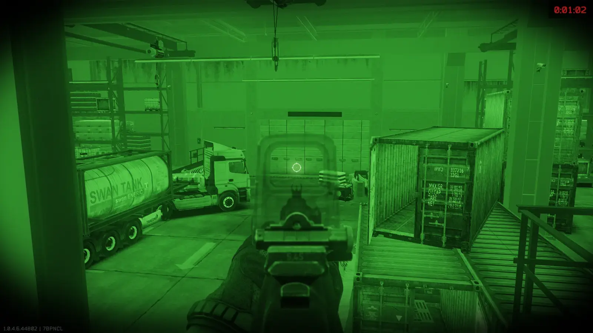
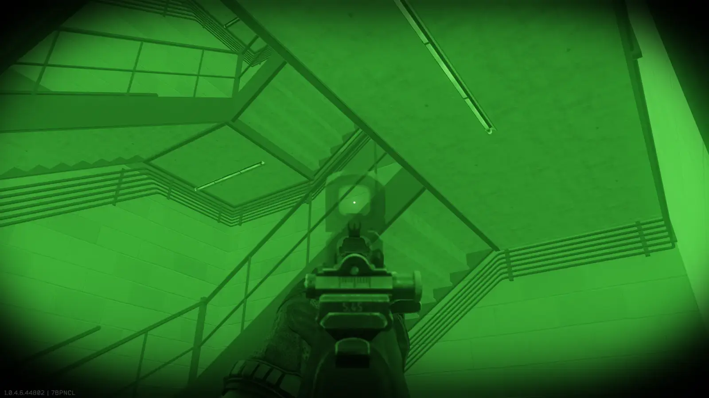
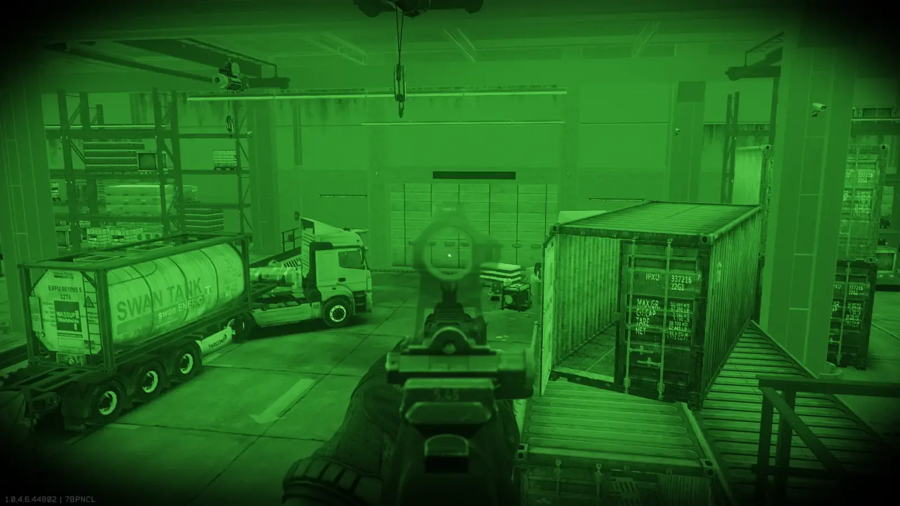

Mod
Transparent Sights / Weapon
- Downloads
- 2,021
- Favourites
- 26
- Mod lists
- 39
ABOUT
Alpha version, please share feedback in comments



FAQ
- My scope does not become transparent
- Open scope stat card and switch
TRANSP: OFFtoTRANSP: ON
- Open scope stat card and switch
- I dislike blur, how can I disable it?
- Open F12 menu and untick
Depth of Field/Enabled
- Open F12 menu and untick
- I like blur, how can I make it more blurry?
- Open F12 menu and set
Depth of Field/maxBlurSizeto higher value
- Open F12 menu and set
- How do I make entire weapon transparent?
- Open F12 menu and tick
Make entire weapon transparent
- Open F12 menu and tick
Version
0.1.1
SPT 4.0.*
Fika: compatible
1,432 downloads17.6 KB
- Fixed lights of tactical devices shining through transparent weapons
VirusTotal: report 1
Version
0.1.0
SPT 4.0.*
Fika: compatible
60 downloads17.5 KB
- Added option to make entire weapon transparent (F12/Make entire weapon transparent)
- Improved compatibility with modded sights
VirusTotal: report 1
Version
0.0.1
SPT 4.0.*
Fika: compatible
529 downloads12.7 KB
Initial release
VirusTotal: report 1